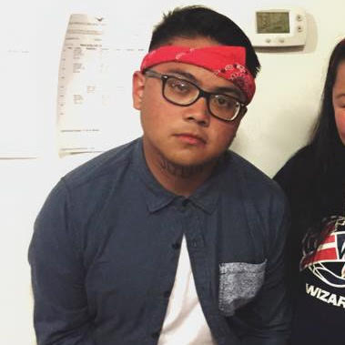

Public Relations

Public RelationsChuck Ventura
- Junior in Communication
Contact: chris412@vt.edu - Favorite quote? - "Damn, Chuck is so fly. I hope one day I can be fly like him. Also, will I ever move out of Barringer???" - Ian Lim
- What fictional character do you relate to the most? - That kid in High School Musical that thought a cello was "A SAWWWWW!?"
- What was your most embarrassing moment? - Can't really decide between my pants falling off during Singkil or my loincloth falling off during freshmen dance.
- Biggest fear? - Pants falling off during Tinikling
- Where do you see yourself in 10 years? - FASA officer, probably.
- Chuck "Chuckish Gambino" Ventura is an award-winning rapper, best known for his hit songs "Shut Up and (Freshmen) Dance" and "Ian Better Have My Money" from his multi-platinum album, "Straight Outta Shawnee." Catch him outside Turner freestylin' and passing out copies of his newest mixtape, "In the Lonely Math Empo."
Public RelationsGillian Gavino
- Junior in International Studies, Economics
Contact: gilliang@vt.edu - Any nicknames? - Yes
- If you could live anywhere where would it be? - In your hearts and minds for years to come
- I got 99 problems but - California drought ain't one.
- What fictional character do you relate to the most? - Jon Snow because he dies...wait are you caught up yet?! Sorry.
- Which Disney princess would you be? - Amelia Mignonette Thermopolis Renaldi, Prin-cess of Genovia
- "If I had to describe Gillian in one word, it would be 'table.'"-excerpt from Desmond Tutu's obituary to Gillian Gavino "Better than butter!"-King Wilhelm Alexander of the Netherlands "Gill's command of color, prospective, and similes is unrivaled even to this day."-Rick Steves, travel writer and TV presenter "One thumb way up!"-LA times People love us on yelp. Registered Mississippi Historic Landmark. All rights reserved.